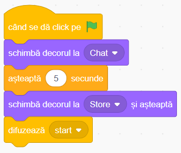

Jocul "Lista de cumpărături" în Scratch
Povestea jocului
Bunica Abby o roagă pe Lena, nepoata ei, să o ajute să facă o listă de cumpărături. Împreună, ele adaugă produse într-o listă, apoi modifică, șterg și înlocuiesc anumite elemente, învățând să folosească blocurile specifice pentru liste în Scratch.
Ce vei învăța
- Utilizarea listelor în Scratch
- Adăugarea și ștergerea elementelor din listă
- Înlocuirea unui element din listă
- Comunicarea între personaje folosind mesaje
Să începem!
Am pregătit un proiect starter cu decorul și personajele adăugate. Tu vei implementa logica personajelor și a scenei.
Deschide proiectul starterSfat: Apasă "Vezi în interior" și "Remixează" pentru a salva propria versiune!
0 Crearea variabilei și a listei
- Acest pas este foarte important pentru ca jocul să își atingă scopul, acela de practica listele.
- În secțiunea Varibile
- creem o variabilă și o numim mere.
- creem o listă și o denumim lista.
- Variabila mere o vom folosi pentru a afla poziția elementului "mere" în listă.
- Lista lista o vom folosi pentru practicarea și aprofundarea acestui tip de date.
1 Programarea bunicii Abby
- La începutul jocului, personajul Abby este ascuns.
- Când primește mesajul start, se afișează bunicuța.
- După ce golește lista, aceasta trimite mesaje către nepoata Lena.
2 Programarea nepoatei Lena
Lena creează lista, adaugă și modifică produsele conform instrucțiunilor primite.
- Acest personaj este ascuns la începerea jocului.
- Populează lista prin răspunsurile la întrebări.
- Crează variabila mere și o folosește pentru a identifica la ce index din listă este elementul "mere".
- Pentru a șterge ultimul element din listă, se folosește de combinația de instrucțiuni șterge lungimea lui lista din lista:
- șterge _ din lista efectuează ștergerea elementului _ din listă.
- lungimea lui lista returnează un număr, acela fiind lungimea listei.
- Combinând cele două instrucțiuni de mai sus, se șterge ultimul element din listă.
- Adaugă ciocolată în listă.
- Înlocuiește elementul mere cu pere:
- mere este o variabilă care returnează poziția cuvântului "mere" în listă.
- Comanda înlocuiește item din listă cu _ facilitează înlocuirea elementului de pe poziția item-ului cu ceea ce este completat în "_".
3 Programarea scenei
La începutul jocului, se schimbă decorul și pornește interacțiunea dintre personaje.
4 Provocări pentru îmbunătățire
După ce ai creat lista de cumpărături, poți adăuga următoarele îmbunătățiri:
Adaugă fundal sonor
Include muzică liniștită sau un efect când lista este completată.
Afișează lista completă
Fă ca Lena sau Abby să citească întreaga listă la finalul jocului.
Limitează lista
Setează o limită de maxim 5 produse, iar dacă lista e plină, blochează adăugarea.
Feedback de la bunică
Fă ca bunica să comenteze dacă un produs nu este dorit sau apare de două ori.
Felicitări!
Ai creat un joc interactiv în care personajele colaborează pentru a realiza o listă de cumpărături. Acum poți să-l îmbunătățești sau să creezi o variantă proprie cu alte produse!